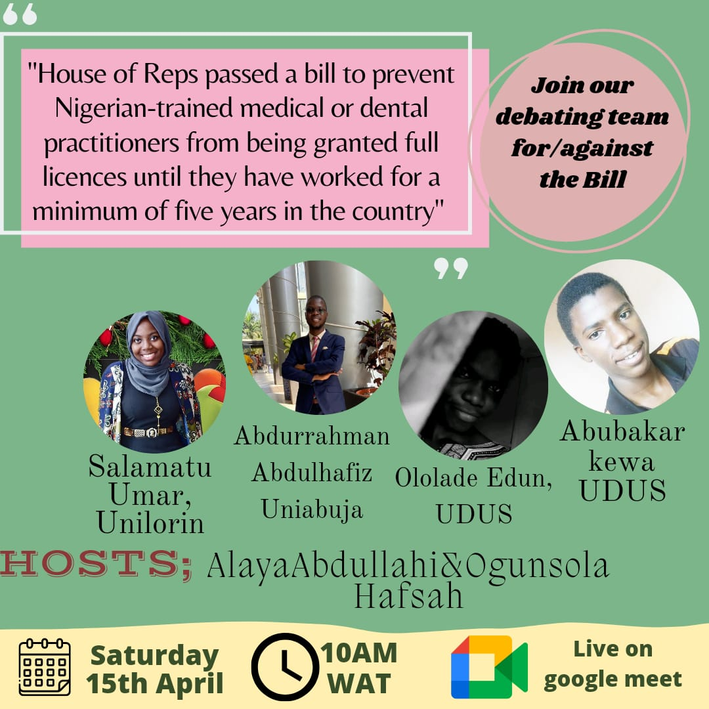

Medical Bill Debate
Apr 19 2023
On
Saturday 15th of April 2023
I hosted and moderated a debate on a medical bill proposed by the nigerian house of rep member
Hon Ganiyu Johnson
. This bill also known as the
Brain drain
bill aims to mandate any Nigeria trained Medical or Dental Practitioner to Practice in Nigeria for a minimum of five years before granted a full licence by the council in order to make quality health services available to Nigeria.
Joining me to moderate the debate is Mrs Ogunsola Hafsah who is a medical student at the university of Abuja. And, we were joined by four participants separated into teams of two's. The first team which debate in support of the bill consists of :
- Mrs Salamatu Umar, a medical student from the university of Ilorin
- Mr Ololade Edun, a medical student from Usman dan Fodio university sokoto
And the second team which debate against the bill consists of :
- Mr Abdurrahman Abdulhafeez, a medical student from the university of Abuja
- Mr Abubakar Hamisu Kewa, a medical student from Usman dan Fodio university sokoto
Here is the audio of the debate